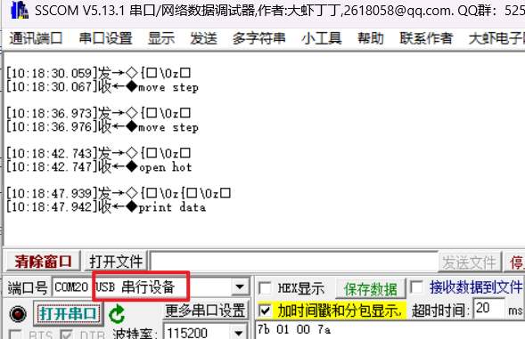

<!DOCTYPE lake>
<h2 data-lake-id="qW97l" data-lake-index-type="2" id="qW97l"><span data-lake-id="u311e087b" id="u311e087b">驱动SSD1306屏幕</span></h2><p data-lake-id="udf8afc67" id="udf8afc67"><span data-lake-id="ubfe1db2f" id="ubfe1db2f">参考文件路径:\Espressif\frameworks\esp-idf-v5.3.1\examples\peripherals\lcd\i2c_oled</span></p><p data-lake-id="ue3da0d1b" id="ue3da0d1b"><span data-lake-id="u70392264" id="u70392264">根据官方给出的示例代码，直接复制最终组合为如何代码</span></p><h3 data-lake-id="YeLD6" data-lake-index-type="2" id="YeLD6"><span data-lake-id="u0844b4df" id="u0844b4df">添加依赖</span></h3><span class="yuque-card-unsupported">[codeblock]</span><ul list="ue444b2dd"><li data-lake-id="ua03136c6" fid="u1ab65bed" id="ua03136c6"><span class="lake-fontsize-11" data-lake-id="u7f087743" id="u7f087743" style="color: rgb(97, 102, 107)">~（波浪号）表示允许安装最新的修订版本（即最后一位数字可以变化，但前两位必须相同）。具体来说：</span></li></ul><ul data-lake-indent="1" list="ue444b2dd"><li data-lake-id="u3b26ceef" fid="u13936ca9" id="u3b26ceef"><span class="lake-fontsize-11" data-lake-id="uc6e55a1b" id="uc6e55a1b" style="color: rgb(97, 102, 107)">~8.3.0 表示允许安装 8.3.0 及以上版本，但不超过 8.4.0。也就是说，允许 8.3.x 系列的最新版本，但不包括 8.4.0 及以上。</span></li></ul><ul list="ue444b2dd" start="2"><li data-lake-id="u29870356" fid="u1ab65bed" id="u29870356"><span class="lake-fontsize-11" data-lake-id="u05cc9102" id="u05cc9102" style="color: rgb(97, 102, 107)">^（插入符号）表示允许安装最新的次要版本（即中间数字可以变化，但主版本号必须相同）。具体来说：</span></li></ul><ul data-lake-indent="1" list="ue444b2dd"><li data-lake-id="u35adb96b" fid="u5d3f23cc" id="u35adb96b"><span class="lake-fontsize-11" data-lake-id="ufa514df4" id="ufa514df4" style="color: rgb(97, 102, 107)">^1 表示允许安装 1.0.0 及以上版本，但不超过 2.0.0。也就是说，允许 1.x.x 系列的最新版本，但不包括 2.0.0 及以上。</span></li></ul><p data-lake-id="u4141b027" id="u4141b027"><span class="lake-fontsize-11" data-lake-id="u74909691" id="u74909691" style="color: rgb(97, 102, 107)">​</span><br/></p><h3 data-lake-id="DbaVI" data-lake-index-type="2" id="DbaVI"><span data-lake-id="ud005d7a0" id="ud005d7a0">修改示例代码</span></h3><span class="yuque-card-unsupported">[codeblock]</span><p data-lake-id="u4534efd1" id="u4534efd1"><br/></p><p data-lake-id="u8bb5b6b3" id="u8bb5b6b3"><br/></p><h2 data-lake-id="W68YA" data-lake-index-type="2" id="W68YA"><span data-lake-id="u47635f25" id="u47635f25">测量打印头温度</span></h2><p data-lake-id="ub9297a5f" id="ub9297a5f"><span data-lake-id="uf0353a55" id="uf0353a55">参考示例代码：C:\data\devtools\Espressif\frameworks\esp-idf-v5.3.1\examples\peripherals\adc\continuous_read\main</span></p><p data-lake-id="u81646464" id="u81646464"><span data-lake-id="ud596bfd0" id="ud596bfd0">参考链接：</span><a data-lake-id="u90d74720" href="https://docs.espressif.com/projects/esp-idf/zh_CN/stable/esp32s3/api-reference/peripherals/adc_continuous.html" id="u90d74720" rel="noopener noreferrer" target="_blank"><span data-lake-id="ub7164c91" id="ub7164c91">https://docs.espressif.com/projects/esp-idf/zh_CN/stable/esp32s3/api-reference/peripherals/adc_continuous.html</span></a></p><h3 data-lake-id="qyyoK" data-lake-index-type="2" id="qyyoK"><span data-lake-id="u67eb52db" id="u67eb52db">修改示例代码</span></h3><span class="yuque-card-unsupported">[codeblock]</span><h2 data-lake-id="nwxeR" data-lake-index-type="2" id="nwxeR"><span data-lake-id="ud61a28c5" id="ud61a28c5">步进电机驱动</span></h2><p data-lake-id="u8bc68fb3" id="u8bc68fb3"><span data-lake-id="u761835d4" id="u761835d4">参考步进电机时许图</span></p><span class="yuque-card-unsupported">[codeblock]</span><h2 data-lake-id="bkY3L" data-lake-index-type="2" id="bkY3L"><span data-lake-id="u66857911" id="u66857911">打印数据</span></h2><p data-lake-id="u8371ec98" id="u8371ec98"><span data-lake-id="uf09b456a" id="uf09b456a">参考链接：</span><a data-lake-id="u1c75c6c9" href="https://docs.espressif.com/projects/esp-idf/zh_CN/stable/esp32s3/api-reference/peripherals/spi_master.html" id="u1c75c6c9" rel="noopener noreferrer" target="_blank"><span data-lake-id="u1234e316" id="u1234e316">https://docs.espressif.com/projects/esp-idf/zh_CN/stable/esp32s3/api-reference/peripherals/spi_master.html</span></a></p><p data-lake-id="ub316b19f" id="ub316b19f"><span data-lake-id="ufe7affdc" id="ufe7affdc">参考代码：C:\data\devtools\Espressif\frameworks\esp-idf-v5.3.1\examples\peripherals\spi_master\lcd\main</span></p><h3 data-lake-id="FyQAk" data-lake-index-type="2" id="FyQAk"><span data-lake-id="u7a8ecde2" id="u7a8ecde2">打印一行</span></h3><span class="yuque-card-unsupported">[codeblock]</span><h3 data-lake-id="SiOpZ" data-lake-index-type="2" id="SiOpZ"><span data-lake-id="u3bc56772" id="u3bc56772">打印多行</span></h3><span class="yuque-card-unsupported">[codeblock]</span><h2 data-lake-id="i3OCW" data-lake-index-type="2" id="i3OCW"><span data-lake-id="u47841235" id="u47841235">串口通讯</span></h2><p data-lake-id="u231615ea" id="u231615ea"><span data-lake-id="uf51cfce3" id="uf51cfce3">参考链接：</span><a data-lake-id="u9ea734ab" href="https://github.com/espressif/esp-idf/blob/v5.3.1/examples/peripherals/usb_serial_jtag/usb_serial_jtag_echo/main/usb_serial_echo_main.c" id="u9ea734ab" rel="noopener noreferrer" target="_blank"><span data-lake-id="u69211296" id="u69211296">https://github.com/espressif/esp-idf/blob/v5.3.1/examples/peripherals/usb_serial_jtag/usb_serial_jtag_echo/main/usb_serial_echo_main.c</span></a></p><p data-lake-id="u59bc064d" id="u59bc064d"><span data-lake-id="u57fe112e" id="u57fe112e">串口0已经被IDF用于调试了，所以无法直接使用串口0，在这里我们使用USB口进行串口通信</span></p><p data-lake-id="ud3f95298" id="ud3f95298"></p><span class="yuque-card-unsupported">[codeblock]</span>